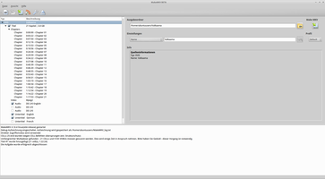
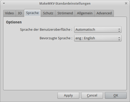
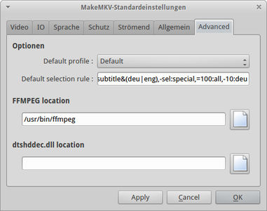

MakeMKV
Dieser Artikel wurde für die folgenden Ubuntu-Versionen getestet:
Ubuntu 16.04 Xenial Xerus
Ubuntu 14.04 Trusty Tahr
Zum Verständnis dieses Artikels sind folgende Seiten hilfreich:
 MakeMKV BETA
MakeMKV BETA  ist ein kommerzieller Konverter, mit dem DVDs und Blu-ray-Disks abgespielt oder auf der Festplatte gespeichert werden können. Außerdem ist es möglich, bereits vorhandene .iso-Dateien und weiteres Videomaterial zu konvertieren. MakeMKV setzt auf das Matroska-Format, da dieses Containerformat eine Reihe von Audio- und Videocodecs unterstützt und Untertitel sowie Kapitelmarken übernehmen kann. Zur Weiterverarbeitung der Dateien kann z.B. HandBrake verwendet werden.
ist ein kommerzieller Konverter, mit dem DVDs und Blu-ray-Disks abgespielt oder auf der Festplatte gespeichert werden können. Außerdem ist es möglich, bereits vorhandene .iso-Dateien und weiteres Videomaterial zu konvertieren. MakeMKV setzt auf das Matroska-Format, da dieses Containerformat eine Reihe von Audio- und Videocodecs unterstützt und Untertitel sowie Kapitelmarken übernehmen kann. Zur Weiterverarbeitung der Dateien kann z.B. HandBrake verwendet werden.
Die Shareware-Version bietet den vollen Funktionsumfang. Während der Beta-Phase ist das Programm kostenlos und der Testzeitraum von 30 Tagen kann beliebig oft verlängert werden. Nach Beendigung der Beta-Phase muss das Programm für die weitere Nutzung der Blu-ray Funktionalität käuflich erworben werden.
Hinweis:
Beim Einsatz dieses Programms sind – sofern ein Kopierschutz umgangen wird – die Urheberrechtsgesetze im Land des jeweiligen Benutzers zu beachten.
|  |  |
| Oberfläche | Einstellungen |
Installation¶
Das Programm ist kein Bestandteil der offiziellen Paketquellen. Zur Installation muss man daher auf ein "Personal Package Archiv" (PPA) [1] ausweichen oder es selbst aus dem Quelltext kompilieren [2].
PPA¶
Adresszeile zum Hinzufügen des PPAs:
ppa:heyarje/makemkv-beta
Hinweis!
Zusätzliche Fremdquellen können das System gefährden.
Ein PPA unterstützt nicht zwangsläufig alle Ubuntu-Versionen. Weitere Informationen sind der  PPA-Beschreibung des Eigentümers/Teams heyarje zu entnehmen.
PPA-Beschreibung des Eigentümers/Teams heyarje zu entnehmen.
Damit Pakete aus dem PPA genutzt werden können, müssen die Paketquellen neu eingelesen werden.
Nach dem Aktualisieren der Paketquellen können folgende Pakete installiert werden [3]
makemkv-bin (ppa)
makemkv-oss (ppa)
 mit apturl
mit apturl
Paketliste zum Kopieren:
sudo apt-get install makemkv-bin makemkv-oss
sudo aptitude install makemkv-bin makemkv-oss
Manuell¶
Zur Vorbereitung des Kompilierens müssen die folgenden Pakete auf dem System vorhanden sein:
build-essential
checkinstall
libc6-dev
libssl-dev
libexpat1-dev
libgl1-mesa-dev
libqt4-dev
libavcodec-dev
libavutil-dev
pkg-config
mit apturl
Paketliste zum Kopieren:
sudo apt-get install build-essential checkinstall libc6-dev libssl-dev libexpat1-dev libgl1-mesa-dev libqt4-dev libavcodec-dev libavutil-dev pkg-config
sudo aptitude install build-essential checkinstall libc6-dev libssl-dev libexpat1-dev libgl1-mesa-dev libqt4-dev libavcodec-dev libavutil-dev pkg-config
Anschließend von makemkv.com die Pakete makemkv_VERSION_bin.tar.gz und makemkv_VERSION_oss.tar.gz herunterladen und entpacken [4].
Hinweis!
Fremdsoftware kann das System gefährden.
Nun beide Pakete kompilieren und das jeweilige .deb-Paket installieren [5][6][8].
Bedienung¶
Das Programm ist bei Ubuntu-Varianten mit einem Anwendungsmenü unter "Multimedia -> MakeMKV" zu finden [7].
Die Software ist einfach gehalten und intuitiv zu erfassen. Über die Schaltflächen sind die wichtigsten Optionen zu erreichen. Sofern die Symbolleiste über "Ansicht" ausgeblendet wurde, können die Punkte über "Datei" aufgerufen werden.
Einzelne Titel des Mediums können durch einen Linksklick  an- bzw. abgewählt werden. Mit "
an- bzw. abgewählt werden. Mit "<" vor dem jeweiligen Titel können die Spuren für Untertitel und Audio ein-/ausgeblendet werden.
| Symbolleiste | |
| Schaltfläche | Beschreibung |
 | Videodatei öffnen. |
| Gewählten Titel speichern. | |
| Sicherungskopie anlegen. | |
| Streaming starten. | |
| Einstellungen aufrufen. | |
 | Medium auswerfen. |
| Medium auf Festplatte kopieren. | |
Terminal¶
MakeMKV kann auch in einem Terminalfenster genutzt werden:
makemkvcon [SCHALTER] KOMMANDO [OPTIONEN]
| Kommandos | |
| Parameter | Beschreibung |
info QUELLE | Informationen zum Medium ausgeben |
mkv QUELLE TITEL-ID ZIELVERZEICHNIS | Einzelnen Titel speichern |
stream QUELLE | Streamingserver starten |
backup QUELLE ZIELVERZEICHNIS | Sicherungskopie auf der Festplatte anlegen |
| Quellspezifikationen | |
| Parameter | Beschreibung |
iso:DATEINAME | Das ISO-Abbild DATEINAME öffnen |
file:ORDNERNAME | Dateien im Ordner ORDNERNAME öffnen |
disc:DISC-ID | Das Medium mit der ID DISK-ID öffnen |
dev:GERÄT | Datenträger mit dem Gerätenamen GERÄT des Betriebssystems öffnen |
--robot | Robot mode |
Einstellungen¶
Sprache¶
Über "View -> Preferences -> Language" beim Punkt "Interface language" die gewünschte Sprache einstellen.
|  |
| Fortgeschrittenenmodus |
Fortgeschrittenenmodus¶
Um den Fortgeschrittenenmodus aufzurufen, wählt man unter den Einstellungen den Reiter "Allgemein" aus und aktiviert [] "Expert Mode". Es erscheint ein neuer Reiter "Advanced".
Unter "Default selection rule" können Zusatzeinstellungen vorgenommen werden. Der Aufbau der Syntax definiert sich durch {Aktion}:{Kondition} und wird durch Kommata voneinander getrennt.
Die Grundkonfiguration:
-sel:all,+sel:(favlang|nolang),-sel:(havemulti|havecore),-sel:mvcvideo,=100:all,-10:favlang
Eine überarbeitete Fassung kann so aussehen:
-sel:all,+sel:audio&(deu|eng),-sel:(havemulti),-sel:mvcvideo,+sel:subtitle&(deu|eng),-sel:special,=100:all,-10:deu
| Advanced | |
| Parameter | Beschreibung |
+sel / -sel | Aus-/abwählen |
+N | Einem Track in der Gewichtung den dezimalen Wert N zuordnen |
-N | Einem Track in der Gewichtung den dezimalen Wert N abziehen |
=N | Dem Track die Gewichtung des dezimalen Wertes N zuweisen |
-sel:all | Alle Tracks abwählen |
+sel:audio&(deu|eng) | Alle Audio-Tracks in den Sprachen Deutsch und Englisch auswählen. Als Grundlage dient ISO 639-2B/T. |
-sel:(havemulti) | Alle Titel (Mono/Stereo) abwählenm sofern ein mehrkanaliger Track in derselben Sprache vorhanden ist |
-sel:mvcvideo | 3D-Videos abwählen |
+sel:subtitle&(deu|eng) | Alle Untertitel in den gewählten Sprachen auswählen – hier Deutsch deu und Englisch eng. |
-sel:special | Specials wie Director's Comment, Making off... abwählen |
=100:all | Die Gewichtung für alle Tracks in der Ausgabe auf 100 setzen |
-10:deu | Verringerung der Gewichtung für deutsche Titel um 10 |
Hinweis:
Eine genaue Auflistung ist im MakeMKV-Forum unter Changing default track selection und Selection rule for localised audio tracks and subtitles zu finden.
FFmpeg¶
Der Pfad zu FFmpeg kann ebenfalls in diesem Reiter angegeben werden. Hier /usr/bin/ffmpeg bzw. /usr/bin/avconv angeben.
Hinweis:
Seit Version 1.8.6 verwendet MakeMKV nicht mehr FFmpeg, sondern Libav (siehe Building with latest libavcodec ).
Blu-ray¶
Direktes Abspielen im Mediaplayer¶
Ab Version 1.8.5 kann MakeMKV die libaacs-/libbdplus-Bibliotheken emulieren – dies ermöglicht ein direktes Abspielen kopiergeschützter Blu-rays z.B. mit VLC. Dafür muss zunächst das libaacs-Paket aus den offiziellen Paketquelllen deinstalliert werden:
sudo apt-get remove libaacs0
Nun erstellt man zwei Symlinks für libaacs und libbdplus:
cd /usr/lib sudo ln -s libmmbd.so.0 libaacs.so.0 sudo ln -s libmmbd.so.0 libbdplus.so.0
Danach sollten sich Blu-rays in allen Mediaplayern öffnen lassen, sofern diese auf der libbluray-Bibliothek aufbauen.
Streaming¶
Neben dem Speichern auf der Festplatte unterstützt MakeMKV auch das Streaming von Blu-ray-Inhalten. Damit ist es möglich, Blu-rays und DVDs in anderen Anwendungen und über das Netzwerk abzuspielen. Ein entsprechendes Plugin gibt es etwa für XBMC. Dieses kann als plugin.makemkvbluray.zip  heruntergeladen und anschließend in XBMC installiert werden.
heruntergeladen und anschließend in XBMC installiert werden.

- Erstellt mit Inyoka
-
 2004 – 2017 ubuntuusers.de • Einige Rechte vorbehalten
2004 – 2017 ubuntuusers.de • Einige Rechte vorbehalten
Lizenz • Kontakt • Datenschutz • Impressum • Serverstatus -
Serverhousing gespendet von